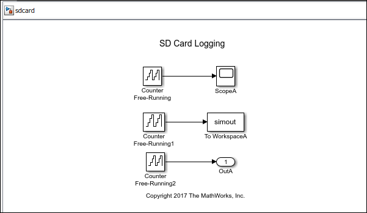

You can use SD card logging to save signals from Simulink® models on an SD card mounted on a target hardware. The signals
from these models are saved as data points in MAT-files. With the data you log, you can
apply fault analysis, search for transient behavior, or analyze sensor data collected
over a long period of time. The data points can be saved in:
Structure, Structure with time, or
Array format. Simulink
supports logging signals on the target hardware from only these three blocks:

Without MAT-file logging on SD card, you can only log and analyze data on the target hardware through External mode or by sending the signal to a computer (using Serial, UDP, or TCP) and storing it in MATLAB®. These mechanisms need an active connection between a computer and the target hardware when logging data. With SD card logging, you can log data without any need to connect the target hardware to a computer. Other advantages of logging data to SD card over other mechanisms are:
The ability to collect data over a long duration for analysis.
The ability to store the data in a well-structured MAT-file, including timestamp information.
To log MAT-files on SD card using the Simulink Support Package for Raspberry Pi™ Hardware, you must have a Simulink Coder™ or Embedded Coder® license.
Before you start to save signals from Simulink models on an SD card, complete the steps listed in Prerequisites for Logging Signals.
Configure Board Parameters and Enable MAT-File Logging: To save MAT-files on an SD card, the MAT-file logging option in the Configuration Parameters dialog box must be selected. Also, the target hardware parameters must be specified.
Configure Model to Log Signals on SD Card: SD card logging is supported in models containing To Workspace, Scope, or Outport blocks. You must specify the values for several block parameters.
Run Model on Target Hardware: Simulink deploys code and logs signals on the SD card. These signals are saved as MAT-files on the target hardware.
Import MAT-Files into MATLAB: After logging is complete, you can open MAT-files in MATLAB and use them for further analysis.